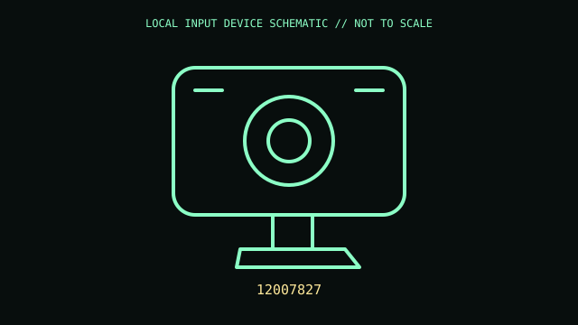

[ ADAPTIVE AND SWITCH-ACCESS CONTROLS // IDENTIFIED COMPONENT ]
Tobii Eye Tracker 5
Monitor-mounted eye/head tracker used for supported games and assistive access applications.

MODEL IDENTIFICATION: 12007827. Confirm the printed SKU, revision, bundle, region, and included accessories before repair or compatibility claims.
Model specifications
| Catalog leaf | Adaptive and switch-access controls |
|---|---|
| Exact model / identifier | 12007827 |
| Mechanism and primary specifications | USB 2.0 connection; NIR eye-tracking sensor and head tracking; up to 133 Hz imaging sampling; manufacturer lists 40° × 40° field of view and supported monitor-size range. |
| Compatibility and interface caveats | Eye tracking is not automatically a general Windows cursor interface; software integration is required. Windows compatibility and screen/mount geometry must meet Tobii requirements. |
| Revision identification | Record the full label and software/firmware revision. Similar product-family names may use different protocols, components, connectors, or bundled accessories. |
Preservation and service
Preserve magnetic monitor mount and cable; clean optical window with microfiber only and avoid pointing infrared-sensitive equipment into the sensor.
Separate observed condition and test setup from vendor-published specifications; record host OS, driver/app version, cables, adapters, and accessories.
Primary manufacturer sources
- Tobii Eye Tracker 5 productManufacturer documentation; verify the exact SKU, revision, region, and accessories against the unit label.
- Tobii technical specificationsManufacturer documentation; verify the exact SKU, revision, region, and accessories against the unit label.
Manufacturer support pages can change; retain the applicable manual and its revision in the physical equipment record.